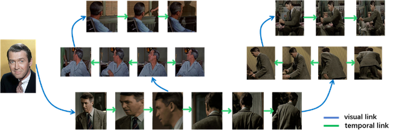
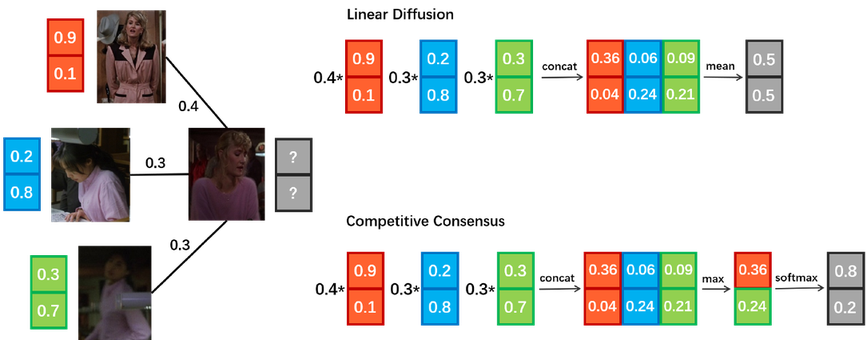
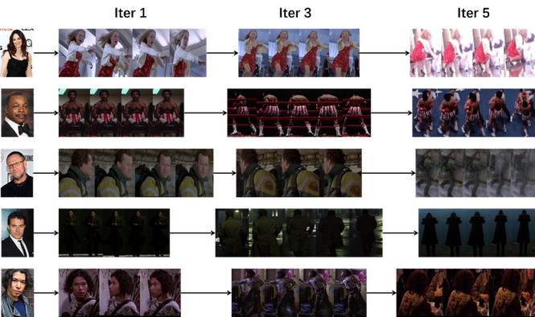

Abstract
In real-world applications, e.g. law enforcement and video retrieval, one often needs to search a certain person in long videos with just one portrait.
This is much more challenging than the conventional settings for person re-identification, as the search may need to be carried out in the environments different from where the portrait was taken.
In this paper, we aim to tackle this challenge and propose a novel framework, which takes into account the identity invariance along a tracklet, thus allowing person identities to be propagated via both the visual and the temporal links.
We also develop a novel scheme called Progressive Propagation via Competitive Consensus, which significantly improves the reliability of the propagation process.
To promote the study of person search, we construct a large-scale benchmark, which contains 127K manually annotated tracklets from 192 movies.
Experiments show that our approach remarkably outperforms mainstream person re-id methods, raising the mAP from 42.16% to 62.27%.
Progressive Propagation via Competitive Consensus
Competitive Consensus
Competitive Consensus is a novel scheme for label propagation.
Compared to the conventional linear diffusion, it improves the reliability by
propagating the most confident information.

Progressive Propagation
Progressive Propagation is a simple but effective scheme to accelerate the propagation process and
reduce the effects of noise, which freezes the label of a certain fraction of nodes at
each iteration according to their confidence.
Results
Accuracy on CSM
| Dataset |
CSM |
MARS |
iLIDS |
PRID |
Market |
PSD |
PIPA |
| task |
search |
re-id |
re-id |
re-id |
re-id |
det.+re-id |
recog. |
| type |
video |
video |
video |
video |
video |
image |
image |
| identities |
1,218 |
1,261 |
300 |
200 |
1,501 |
8,432 |
2,356 |
| tracklets |
127K |
20K |
600 |
400 |
- |
- |
- |
| instances |
11M |
1M |
44K |
40K |
32K |
96K |
63K |
Examples of Search Results

Citation
@inproceedings{huang2018person,
title={Person Search in Videos with One Portrait Through Visual and Temporal Links},
author={Huang, Qingqiu and Liu, Wentao and Lin, Dahua},
booktitle={Proceedings of the European Conference on Computer Vision (ECCV)},
pages={425--441},
year={2018}
}